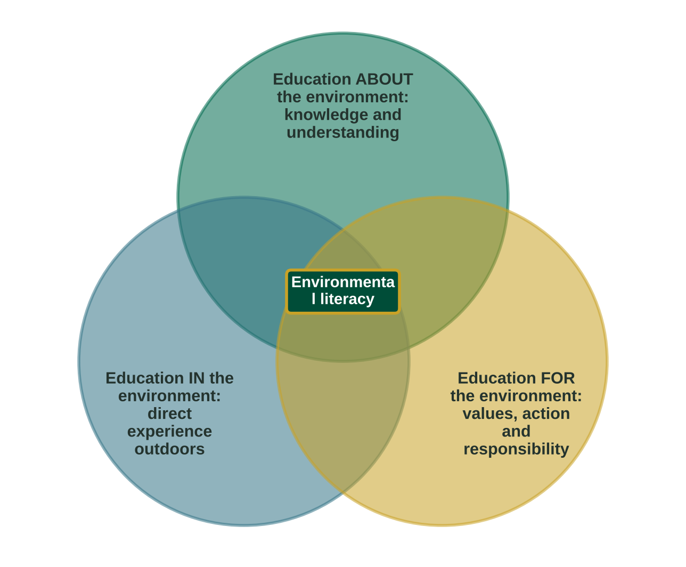
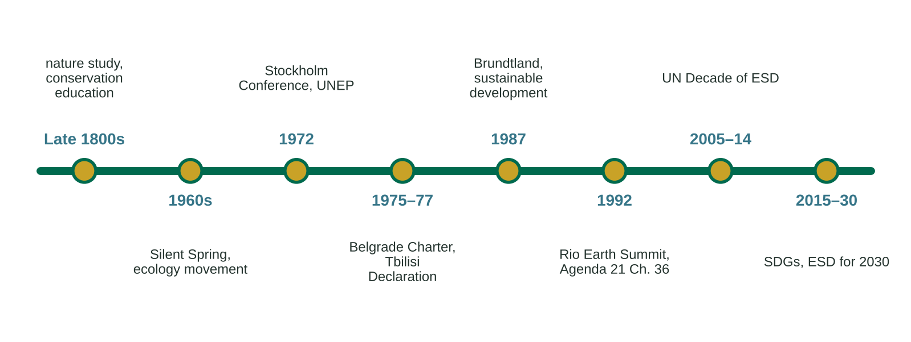
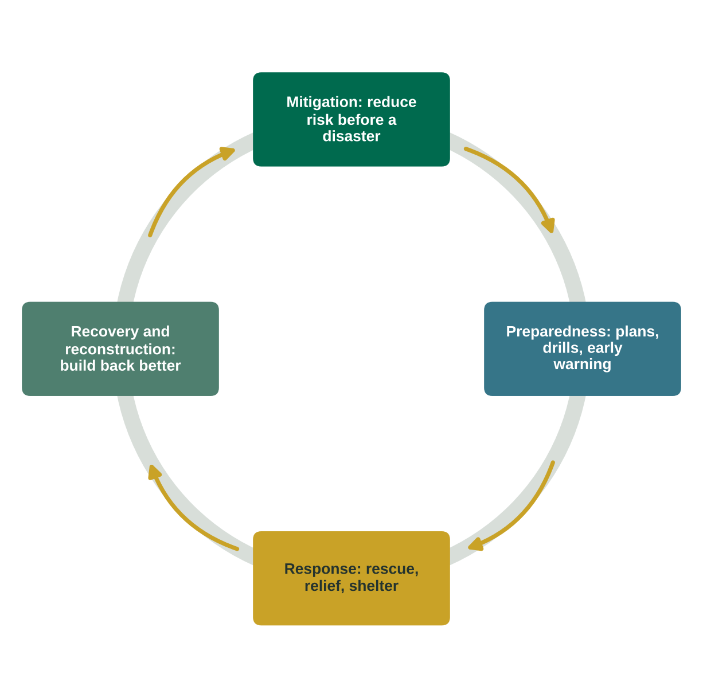

<!doctype html>
<html lang="en">
<head>
<meta charset="utf-8">
<meta name="viewport" content="width=device-width, initial-scale=1">
<title>PC 123 Environmental Education</title>
<meta name="description" content="Environmental literacy, EE curriculum and pedagogy, Bangladesh&#x27;s environmental issues, population, health and disaster risk reduction education">
<link rel="icon" href="assets/favicon.svg" type="image/svg+xml">
<link rel="preconnect" href="https://fonts.googleapis.com">
<link rel="preconnect" href="https://fonts.gstatic.com" crossorigin>
<link rel="stylesheet" href="https://fonts.googleapis.com/css2?family=Fraunces:opsz,wght@9..144,400;9..144,500;9..144,600&family=Inter:wght@400;500;600;700&family=Noto+Serif+Bengali:wght@400;600&family=Source+Serif+4:ital,opsz,wght@0,8..60,400;0,8..60,600;1,8..60,400&display=swap">
<link rel="stylesheet" href="assets/style.css">
<script>try{var t=localStorage.getItem('theme');if(t)document.documentElement.dataset.theme=t}catch(e){}</script>
</head>
<body>
<a class="skip-link" href="#main">Skip to main content</a>
<header class="top">
  <button class="menu-btn" id="menuBtn" aria-label="Open course menu" aria-expanded="false">
    <svg viewBox="0 0 24 24" width="22" height="22" aria-hidden="true"><path d="M3 6h18M3 12h18M3 18h18" stroke="currentColor" stroke-width="2" stroke-linecap="round"/></svg>
  </button>
  <a class="brand" href="index.html"><span class="brand-mark" aria-hidden="true"><svg viewBox="0 0 32 32" width="30" height="30"><circle cx="16" cy="16" r="15" fill="none" stroke="currentColor" stroke-width="1.2"/><path d="M8 12.5 16 9l8 3.5-8 3.5z" fill="currentColor"/><path d="M11 14.2v4.3c0 1.6 2.2 2.9 5 2.9s5-1.3 5-2.9v-4.3" fill="none" stroke="currentColor" stroke-width="1.3"/></svg></span><span class="brand-text">Education <em>Study Notes</em></span></a>
  <div class="search" role="search">
    <input id="q" type="search" placeholder="Search all notes" autocomplete="off" aria-label="Search all notes">
    <div id="results" class="results" hidden></div>
  </div>
  <button class="theme-btn" id="themeBtn" aria-label="Switch light or dark mode">
    <svg viewBox="0 0 24 24" width="20" height="20" aria-hidden="true"><path d="M21 12.8A9 9 0 1 1 11.2 3a7 7 0 0 0 9.8 9.8z" fill="currentColor"/></svg>
  </button>
</header>
<div class="layout">
<nav class="side" id="side" aria-label="Courses">
<a class="side-home" href="index.html">Home</a>
<a class="side-home" href="practice.html">MCQ practice</a>
<div class="side-group"><div class="side-glabel">B.Ed (Hons) core courses</div><ul>
<li><a href="pc111.html"><span class="code">PC 111</span> Introduction to Education</a>
</li>
<li><a href="pc112.html"><span class="code">PC 112</span> Education in Bangladesh</a>
</li>
<li><a href="pc113.html"><span class="code">PC 113</span> Educational Psychology</a>
</li>
<li><a href="pc114.html"><span class="code">PC 114</span> Instructional Technology</a>
</li>
<li><a href="pc115.html"><span class="code">PC 115</span> Philosophical Foundation of Education</a>
</li>
<li><a href="pc116.html"><span class="code">PC 116</span> Sociological Foundation of Education</a>
</li>
<li><a href="pc117.html"><span class="code">PC 117</span> Introduction to Educational Assessment</a>
</li>
<li><a href="pc118.html"><span class="code">PC 118</span> Organisation and Management of Educational Institutions</a>
</li>
<li><a href="pc119.html"><span class="code">PC 119</span> Education and Development</a>
</li>
<li><a href="pc120.html"><span class="code">PC 120</span> Introduction to Curriculum</a>
</li>
<li><a href="pc121.html"><span class="code">PC 121</span> Value Education</a>
</li>
<li><a href="pc122.html"><span class="code">PC 122</span> Gender Education</a>
</li>
<li class="current"><a href="pc123.html"><span class="code">PC 123</span> Environmental Education</a>
<ul class="side-toc">
<li><a href="#unit-1-concepts-of-environmental-education" data-toc="unit-1-concepts-of-environmental-education">Unit 1: Concepts of Environmental Education</a></li>
<li><a href="#unit-2-environmental-education-curriculum-and-implementation" data-toc="unit-2-environmental-education-curriculum-and-implementation">Unit 2: Environmental Education Curriculum and Implementation</a></li>
<li><a href="#unit-3-environmental-education-in-the-context-of-bangladesh" data-toc="unit-3-environmental-education-in-the-context-of-bangladesh">Unit 3: Environmental Education in the Context of Bangladesh</a></li>
<li><a href="#unit-4-health-education-population-education-and-disaster-risk-reduction" data-toc="unit-4-health-education-population-education-and-disaster-risk-reduction">Unit 4: Health Education, Population Education and Disaster Risk Reduction</a></li>
<li><a href="#reading-list" data-toc="reading-list">Reading List</a></li>
<li><a href="#exam-preparation-bank" data-toc="exam-preparation-bank">Exam Preparation Bank</a></li>
<li><a href="#references" data-toc="references">References</a></li>
</ul>
</li>
<li><a href="pc124.html"><span class="code">PC 124</span> Nonformal and Lifelong Education</a>
</li>
<li><a href="pc125.html"><span class="code">PC 125</span> Introduction to Educational Research</a>
</li>
<li><a href="pc126.html"><span class="code">PC 126</span> Statistics in Education</a>
</li>
<li><a href="pc127.html"><span class="code">PC 127</span> Inclusion in Education</a>
</li>
</ul></div>
<div class="side-group"><div class="side-glabel">M.Ed courses</div><ul>
<li><a href="ed501.html"><span class="code">ED 501</span> Education in Global Perspective</a>
</li>
<li><a href="ed502.html"><span class="code">ED 502</span> Policy, Strategy and Leadership in Education</a>
</li>
<li><a href="ed503.html"><span class="code">ED 503</span> Information and Communication Technology in Education</a>
</li>
<li><a href="ed504.html"><span class="code">ED 504</span> Methods and Techniques of Educational Research</a>
</li>
<li><a href="eer580.html"><span class="code">EER 580</span> Statistics in Educational Research</a>
</li>
<li><a href="eer581.html"><span class="code">EER 581</span> Research for Educational Changes</a>
</li>
<li><a href="eer582.html"><span class="code">EER 582</span> Assessment and Evaluation Techniques in Education</a>
</li>
<li><a href="eer583.html"><span class="code">EER 583</span> Practicing Educational Research</a>
</li>
</ul></div>
<div class="side-group"><div class="side-glabel">Open and Distance Learning</div><ul>
<li><a href="odl.html"><span class="code">ODL</span> Open and Distance Learning</a>
</li>
</ul></div>
<div class="side-group"><div class="side-glabel">Beyond the syllabus</div><ul>
<li><a href="trends-2026.html"><span class="code">Trends 2026</span> Education Today: News, Trends, Theories and Approaches Every Educator Should Know</a>
</li>
</ul></div>
</nav>
<div class="scrim" id="scrim"></div>
<main class="main" id="main" tabindex="-1">

<article class="course" data-course="pc123.html">
<header class="hero">
  <div class="kicker">B.ED (HONS) CORE COURSE · STUDENT STUDY NOTES</div>
  <h1 class="course-title"><span class="code-pill">PC 123</span> Environmental Education</h1>
  <p class="subtitle">Environmental literacy, EE curriculum and pedagogy, Bangladesh&#x27;s environmental issues, population, health and disaster risk reduction education</p>
  <dl class="meta"><div><dt>Credit Hours</dt><dd>4</dd></div><div><dt>Units</dt><dd>4</dd></div><div><dt>Built On</dt><dd>Course syllabus; UNESCO-UNEP (1977) Tbilisi Declaration, Palmer (1998), Hungerford &amp; Volk (1990), NAAEE guidelines, UNESCO ESD frameworks, Bangladesh environmental policies</dd></div></dl>
  <div class="hero-actions"><button type="button" class="btn tts-btn" data-tts="all" aria-label="Listen to all of these notes from the beginning"><span aria-hidden="true">▶</span> Listen to all notes</button><a class="btn ghost" href="pdf/pc123.pdf" download>Download PDF</a><a class="btn ghost" href="practice.html?course=pc123.html">Practise MCQs</a><a class="btn ghost" href="#reading-list">Reading list</a></div>
  <div class="progress"><div class="bar"><span id="pbar"></span></div><span id="ptext"></span></div>
</header>
<details class="toc" open><summary>Contents</summary><ol><li><a href="#unit-1-concepts-of-environmental-education">Unit 1: Concepts of Environmental Education</a><span class="tick" data-tick="unit-1-concepts-of-environmental-education"></span></li><li><a href="#unit-2-environmental-education-curriculum-and-implementation">Unit 2: Environmental Education Curriculum and Implementation</a><span class="tick" data-tick="unit-2-environmental-education-curriculum-and-implementation"></span></li><li><a href="#unit-3-environmental-education-in-the-context-of-bangladesh">Unit 3: Environmental Education in the Context of Bangladesh</a><span class="tick" data-tick="unit-3-environmental-education-in-the-context-of-bangladesh"></span></li><li><a href="#unit-4-health-education-population-education-and-disaster-risk-reduction">Unit 4: Health Education, Population Education and Disaster Risk Reduction</a><span class="tick" data-tick="unit-4-health-education-population-education-and-disaster-risk-reduction"></span></li><li><a href="#reading-list">Reading List</a><span class="tick" data-tick="reading-list"></span></li><li><a href="#exam-preparation-bank">Exam Preparation Bank</a><span class="tick" data-tick="exam-preparation-bank"></span></li><li><a href="#references">References</a><span class="tick" data-tick="references"></span></li></ol></details>
<div class="prose">


<h3 id="about-this-course">About this course</h3>
<p>Environmental education (EE) prepares people to understand
environmental systems and problems and to act responsibly for a
sustainable future. This course defines environment, environmental
science, environmental education and environmental literacy; traces EE
from nature study to Education for Sustainable Development (ESD) and the
SDGs; explains how to design, teach and assess EE; analyses Bangladesh's
environmental issues, policies and curricula; and integrates population
education, health education and disaster risk reduction education, which
are closely linked with environment in a densely populated,
climate-vulnerable country.</p>
<h3 id="course-objectives">Course objectives</h3>
<ul>
<li><p>Explain the concepts, aims and evolution of environmental
education and environmental literacy.</p></li>
<li><p>Design EE curricula, teaching strategies, materials and
assessment.</p></li>
<li><p>Analyse environmental issues, conservation, policy and EE in
formal and non-formal education in Bangladesh.</p></li>
<li><p>Explain population, health and disaster risk reduction education
and their place in the curriculum.</p></li>
</ul>


<div class="box box-howto"><div class="box-label">How To Use These Notes</div>
<p>Each unit follows the official syllabus order. Read the narrative
first, then the <strong>Key point</strong> boxes, then test yourself
with the <strong>Exam focus</strong> questions.</p>
<p>Golden boxes = must-remember ideas. Teal boxes = definitions and study tips. Green boxes = Bangladesh context.</p>
<p>The final chapter is a question bank (MCQs with answers, short and broad questions) in the style of university examinations, followed by full references in APA 7th style.</p>
<p>Statistics on enrolment, budgets and policies change every year. Before an exam, check the latest BANBEIS, DPE, UGC and UNESCO figures.</p></div>
<h1 id="unit-1-concepts-of-environmental-education">Unit 1: Concepts of
Environmental Education</h1><div aria-label="Tools for Unit 1: Concepts of Environmental Education" class="unit-tools" role="group"><button aria-label="Listen to Unit 1: Concepts of Environmental Education" class="tts-btn" data-target="unit-1-concepts-of-environmental-education" data-tts="unit" type="button"><span aria-hidden="true">▶</span> Listen to this chapter</button><button aria-label="Listen to the summary of Unit 1: Concepts of Environmental Education" class="tts-btn" data-target="sum-unit-1-concepts-of-environmental-education" data-tts="summary" type="button"><span aria-hidden="true">▶</span> Listen to summary</button><button class="done-btn" data-unit="unit-1-concepts-of-environmental-education" type="button">Mark as studied</button></div><details class="unit-summary" id="sum-unit-1-concepts-of-environmental-education"><summary>Chapter summary</summary><div class="sum-body"><p>The Tbilisi Declaration (UNESCO-UNEP Intergovernmental Conference on Environmental Education, 1977) set three goals and five categories of objectives that remain the foundation of EE.</p><p><strong>This chapter covers:</strong> Environment, environmental science, environmental education and environmental literacy; Aims and objectives of EE: attaining environmental literacy; Evolution of EE and its goals: from nature study to ESD; EE for achieving the SDGs.</p><p><strong>Key terms:</strong></p><ul><li>Environmental education (Stapp et al., 1969) : "Environmental education is aimed at producing a citizenry that is knowledgeable concerning the biophysical environment and its associated problems, aware of how to help solve these problems, and motivated to work toward their…</li></ul></div></details><details class="curriculum" open=""><summary><span class="cur-label">What the curriculum says</span><span class="cur-unit">Unit 1: Concepts of Environmental Education (EE) · 9 contact hours</span></summary><div class="cur-h">Learning outcomes</div><p class="cur-lead">At the end of this unit learners will be able to</p><ol type="a"><li>identify foundations and goals of Environmental Education</li><li>explain how the field of Environmental Education is being evolved</li><li>explain the importance of developing an environmentally literate populace</li></ol><div class="cur-h">Content</div><ul><li>Concept of Environment, Environmental Science, Environmental Education, Environmental</li></ul><div class="cur-sub">Literacy</div><ul><li>Aims and Objectives of EE: Attaining Environmental Literacy</li><li>Evolution of EE and EE goals: From Nature study to Education for Sustainable Development; EE for achieving Sustainable Development Goals (SDGs)</li></ul></details>
<h2 id="environment-environmental-science-environmental-education-and-environmental-literacy">1.1
Environment, environmental science, environmental education and
environmental literacy</h2>
<div class="table-wrap"><table>

<thead>
<tr class="header">
<th><strong>Concept</strong></th>
<th><strong>Meaning</strong></th>
</tr>
<tr class="odd">
<th><strong>Environment</strong></th>
<th>(French <em>environner</em>, to surround) The sum of all living
(biotic) and non-living (abiotic) components and their interactions that
surround and affect organisms. It includes the natural environment (air,
water, land, organisms) and the human-made social, cultural and built
environment. Bangladesh's Environment Conservation Act 1995 defines it
as water, air, land and physical properties and their interrelationships
with human beings, other living beings, plants and micro-organisms</th>
</tr>
<tr class="header">
<th><strong>Environmental science</strong></th>
<th>An interdisciplinary scientific study of the environment and of
solutions to environmental problems, drawing on ecology, chemistry,
geology, biology, economics and other fields</th>
</tr>
<tr class="odd">
<th><strong>Environmental education (EE)</strong></th>
<th>"A process aimed at developing a world population that is aware of
and concerned about the total environment and its associated problems,
and which has the knowledge, attitudes, skills, motivation and
commitment to work individually and collectively toward solutions of
current problems and the prevention of new ones" (Belgrade Charter,
1975)</th>
</tr>
<tr class="header">
<th><strong>Environmental literacy</strong></th>
<th>The capacity to perceive and interpret the relative health of
environmental systems and to take appropriate action to maintain,
restore or improve them (Roth, 1992). It has four components: knowledge,
dispositions (attitudes, sensitivity, responsibility), competencies
(skills) and environmentally responsible behaviour (Hollweg et al.,
2011, NAAEE)</th>
</tr>
</thead>
<tbody>
</tbody>
</table></div>
<div class="box box-def"><div class="box-label">Definition</div>
<p><strong>Environmental education (Stapp et al., 1969)</strong>:
"Environmental education is aimed at producing a citizenry that is
knowledgeable concerning the biophysical environment and its associated
problems, aware of how to help solve these problems, and motivated to
work toward their solution." This is often cited as the first formal
definition.</p></div>
<h2 id="aims-and-objectives-of-ee-attaining-environmental-literacy">1.2
Aims and objectives of EE: attaining environmental literacy</h2>
<p>The <strong>Tbilisi Declaration</strong> (UNESCO-UNEP
Intergovernmental Conference on Environmental Education, 1977) set three
goals and five categories of objectives that remain the foundation of
EE.</p>
<p><strong>Goals:</strong> (1) to foster awareness of and concern about
economic, social, political and ecological interdependence in urban and
rural areas; (2) to provide every person with opportunities to acquire
the knowledge, values, attitudes, commitment and skills needed to
protect and improve the environment; (3) to create new patterns of
behaviour towards the environment.</p>
<p></p>
<p><strong>Figure 1.</strong> <em>The five Tbilisi objectives of
environmental education (1977)</em></p>
<h3 id="education-about-in-and-for-the-environment">Education about, in
and for the environment</h3>
<p>Lucas (1979) and Palmer (1998) distinguished three dimensions of
EE:</p>
<p></p>
<p><strong>Figure 2.</strong> <em>Palmer's model: education about, in
(through) and for the environment</em></p>
<h3 id="the-hungerford-and-volk-model-1990">The Hungerford and Volk
model (1990)</h3>
<p>Hungerford and Volk argued that knowledge alone does not change
behaviour. Responsible environmental behaviour results from:</p>
<ul>
<li><p><strong>Entry-level variables:</strong> environmental sensitivity
(empathy with nature, often developed through significant outdoor
experiences in childhood), knowledge of ecology, attitudes.</p></li>
<li><p><strong>Ownership variables:</strong> in-depth knowledge about
issues and personal investment in them.</p></li>
<li><p><strong>Empowerment variables:</strong> knowledge of and skill in
action strategies, locus of control (belief that one's actions make a
difference), and intention to act.</p></li>
</ul>
<p></p>
<p><strong>Figure 3.</strong> <em>Hungerford and Volk's (1990) pathway
to responsible environmental behaviour (built from the base up)</em></p>
<h2 id="evolution-of-ee-and-its-goals-from-nature-study-to-esd">1.3
Evolution of EE and its goals: from nature study to ESD</h2>
<p></p>
<p><strong>Figure 4.</strong> <em>Evolution from nature study to
education for sustainable development</em></p>
<ul>
<li><p><strong>Nature study</strong> (late 19th century; Liberty Hyde
Bailey, Anna Botsford Comstock): children observe and appreciate nature
directly.</p></li>
<li><p><strong>Conservation education</strong> (1930s onward): wise use
of natural resources (soil, forests, wildlife), stimulated by events
such as the American Dust Bowl.</p></li>
<li><p><strong>Outdoor education:</strong> learning in natural
settings.</p></li>
<li><p><strong>The environmental movement:</strong> Rachel Carson's
<em>Silent Spring</em> (1962) on pesticides; the first Earth Day
(1970).</p></li>
<li><p><strong>International EE:</strong> the UN Conference on the Human
Environment in <strong>Stockholm (1972)</strong> created UNEP and called
for EE (Recommendation 96); the International Environmental Education
Programme (IEEP, 1975); the <strong>Belgrade Charter (1975)</strong>;
the <strong>Tbilisi Conference (1977)</strong>.</p></li>
<li><p><strong>Sustainable development:</strong> <em>Our Common
Future</em> (Brundtland, 1987).</p></li>
<li><p><strong>Rio Earth Summit (1992):</strong> Agenda 21, Chapter 36
("Promoting education, public awareness and training") reoriented
education towards sustainable development.</p></li>
<li><p><strong>Thessaloniki (1997)</strong> and the <strong>UN Decade of
Education for Sustainable Development (DESD, 2005–2014)</strong>, led by
UNESCO.</p></li>
<li><p><strong>Global Action Programme on ESD (2015–2019)</strong> and
<strong>ESD for 2030</strong> (2020–2030), with the <strong>Berlin
Declaration on ESD (2021)</strong>.</p></li>
<li><p><strong>SDGs (2015):</strong> Target 4.7 calls for all learners
to acquire knowledge and skills for sustainable development; SDG 13.3
calls for improved education on climate change mitigation, adaptation
and early warning.</p></li>
</ul>
<h2 id="ee-for-achieving-the-sdgs">1.4 EE for achieving the SDGs</h2>
<p>ESD is "an integral element of SDG 4 and a key enabler of all the
other SDGs" (UNESCO, 2020). UNESCO's <em>Education for Sustainable
Development Goals: Learning Objectives</em> (2017) specifies cognitive,
socio-emotional and behavioural learning objectives for each of the 17
SDGs and eight key competencies for sustainability: systems thinking,
anticipatory, normative, strategic, collaboration, critical thinking,
self-awareness and integrated problem-solving.</p>
<div class="table-wrap"><table>

<thead>
<tr class="header">
<th><strong>Basis</strong></th>
<th><strong>Environmental education</strong></th>
<th><strong>Education for sustainable development</strong></th>
</tr>
<tr class="odd">
<th><strong>Focus</strong></th>
<th>Natural environment and environmental problems</th>
<th>Environment, society and economy together</th>
</tr>
<tr class="header">
<th><strong>Origin</strong></th>
<th>Belgrade (1975), Tbilisi (1977)</th>
<th>Brundtland (1987), Rio (1992), DESD</th>
</tr>
<tr class="odd">
<th><strong>Goal</strong></th>
<th>Environmental literacy and responsible behaviour</th>
<th>Sustainable lifestyles, societies and economies</th>
</tr>
<tr class="header">
<th><strong>Scope</strong></th>
<th>Ecology, pollution, conservation</th>
<th>Plus poverty, equity, peace, consumption, climate, health,
gender</th>
</tr>
</thead>
<tbody>
</tbody>
</table></div>
<h1 id="unit-2-environmental-education-curriculum-and-implementation">Unit
2: Environmental Education Curriculum and Implementation</h1><div aria-label="Tools for Unit 2: Environmental Education Curriculum and Implementation" class="unit-tools" role="group"><button aria-label="Listen to Unit 2: Environmental Education Curriculum and Implementation" class="tts-btn" data-target="unit-2-environmental-education-curriculum-and-implementation" data-tts="unit" type="button"><span aria-hidden="true">▶</span> Listen to this chapter</button><button aria-label="Listen to the summary of Unit 2: Environmental Education Curriculum and Implementation" class="tts-btn" data-target="sum-unit-2-environmental-education-curriculum-and-implementation" data-tts="summary" type="button"><span aria-hidden="true">▶</span> Listen to summary</button><button class="done-btn" data-unit="unit-2-environmental-education-curriculum-and-implementation" type="button">Mark as studied</button></div><details class="unit-summary" id="sum-unit-2-environmental-education-curriculum-and-implementation"><summary>Chapter summary</summary><div class="sum-body"><p>Objectives should span the Tbilisi categories (awareness, knowledge, attitudes, skills and participation) and Bloom's three domains, and be appropriate to learners' development (e.g. sensitivity and wonder in early years; issue investigation and action in adolescence). Examples:</p><p><strong>This chapter covers:</strong> Guiding principles of the EE curriculum; Selecting intended learning objectives; Organisation of content; Teaching–learning principles and strategies; Instructional materials for EE; Assessing EE; Challenges in teaching and learning EE.</p></div></details><details class="curriculum" open=""><summary><span class="cur-label">What the curriculum says</span><span class="cur-unit">Unit 2: Environmental Education - Curriculum and Implementation · 11 contact hours</span></summary><div class="cur-h">Learning outcomes</div><p class="cur-lead">At the end of this unit learners will be able to</p><ol type="a"><li>develop, analyze and evaluate curricula and teaching learning strategies to achieve Environmental Education goals for all learners</li><li>locate and use Environmental Education teaching and learning materials</li><li>integrate instructional technologies into Environmental Education settings</li><li>develop and apply assessment tools for assessing environmental literacy</li></ol><div class="cur-h">Content</div><ul><li>Environmental Education curriculum: Guiding principles, selecting intended learning objectives,</li></ul><div class="cur-sub">organization of content</div><ul><li>Environmental Education: Teaching learning principles and strategies, Instructional materials for</li></ul><div class="cur-sub">EE</div><ul><li>Assessing EE</li><li>Challenges in teaching and learning of EE</li></ul></details>
<h2 id="guiding-principles-of-the-ee-curriculum">2.1 Guiding principles
of the EE curriculum</h2>
<p>The Tbilisi guiding principles (1977) state that EE should:</p>
<ol type="1">
<li><p>Consider the environment in its totality: natural and built,
technological and social.</p></li>
<li><p>Be a continuous lifelong process, beginning at
pre-school.</p></li>
<li><p>Be <strong>interdisciplinary</strong>, drawing on the specific
content of each discipline.</p></li>
<li><p>Examine major environmental issues from local, national, regional
and international points of view.</p></li>
<li><p>Focus on current and potential environmental situations, with a
historical perspective.</p></li>
<li><p>Promote the value of local, national and international
cooperation.</p></li>
<li><p>Explicitly consider environmental aspects in plans for
development and growth.</p></li>
<li><p>Enable learners to have a role in planning their learning
experiences.</p></li>
<li><p>Relate environmental sensitivity, knowledge, problem-solving
skills and values clarification to every age.</p></li>
<li><p>Help learners discover the symptoms and real causes of
environmental problems.</p></li>
<li><p>Emphasise the complexity of environmental problems and the need
for critical thinking and problem-solving skills.</p></li>
<li><p>Use diverse learning environments and approaches, with emphasis
on practical activities and first-hand experience.</p></li>
</ol>
<h2 id="selecting-intended-learning-objectives">2.2 Selecting intended
learning objectives</h2>
<p>Objectives should span the Tbilisi categories (awareness, knowledge,
attitudes, skills and participation) and Bloom's three domains, and be
appropriate to learners' development (e.g. sensitivity and wonder in
early years; issue investigation and action in adolescence).
Examples:</p>
<ul>
<li><p>Class III: "Students will identify five sources of water
pollution in their locality."</p></li>
<li><p>Class VIII: "Students will investigate a local waste problem,
analyse its causes and propose a feasible solution."</p></li>
<li><p>Affective: "Students will demonstrate concern for plants by
caring for a school garden."</p></li>
</ul>
<h2 id="organisation-of-content">2.3 Organisation of content</h2>
<p><strong>Approaches to placing EE in the curriculum:</strong></p>
<ul>
<li><p><strong>Infusion / integration (multidisciplinary):</strong> EE
content is infused into existing subjects (science, geography, language,
social studies). This is the most common approach, including in
Bangladesh.</p></li>
<li><p><strong>Interdisciplinary (separate subject):</strong> EE as a
distinct subject or course (e.g. Environmental Science).</p></li>
<li><p><strong>Cross-curricular theme:</strong> environment as a theme
that runs across all subjects.</p></li>
<li><p><strong>Whole-school approach:</strong> sustainable school
management (energy, waste, gardens, procurement), curriculum, community
links (e.g. Eco-Schools programme).</p></li>
</ul>
<p><strong>Content areas:</strong> ecosystems and biodiversity; natural
resources (water, soil, forests, energy); pollution (air, water, soil,
noise); waste management; climate change; population and environment;
health and environment; disasters; sustainable agriculture; consumption
and lifestyles; environmental ethics and policy.</p>
<p><strong>Sequencing:</strong> from local to global, concrete to
abstract, awareness to action, and a <strong>spiral</strong>
organisation that revisits concepts at greater depth.</p>
<h2 id="teachinglearning-principles-and-strategies">2.4
Teaching–learning principles and strategies</h2>
<p><strong>Principles:</strong> experiential and outdoor learning;
inquiry and problem solving; local relevance; learner participation and
action; interdisciplinarity; values clarification; systems thinking;
cooperation; reflection.</p>
<div class="table-wrap"><table>

<thead>
<tr class="header">
<th><strong>Strategy</strong></th>
<th><strong>Description and example</strong></th>
</tr>
<tr class="odd">
<th>Field trips and outdoor learning</th>
<th>Visit a river, park, wetland or the Sundarbans; nature walks;
schoolyard ecology</th>
</tr>
<tr class="header">
<th>Project-based learning</th>
<th>Students carry out a school waste audit and design a recycling
plan</th>
</tr>
<tr class="odd">
<th>Issue investigation and action training (Hungerford)</th>
<th>Identify an issue, research it, evaluate options and take
citizenship action (persuasion, consumer action, eco-management)</th>
</tr>
<tr class="header">
<th>Experiments and demonstrations</th>
<th>Testing water quality; making a compost pit; demonstrating the
greenhouse effect</th>
</tr>
<tr class="odd">
<th>Case studies</th>
<th>The Buriganga river pollution; arsenic contamination; the Rana Plaza
collapse and industrial safety</th>
</tr>
<tr class="header">
<th>Role-play and simulation</th>
<th>A mock public hearing on building a brick kiln near a school</th>
</tr>
<tr class="odd">
<th>Games</th>
<th>Ecosystem food-web games; carbon footprint calculators</th>
</tr>
<tr class="header">
<th>Storytelling and arts</th>
<th>Folk songs about rivers; environmental drama; poster campaigns</th>
</tr>
<tr class="odd">
<th>Community service and citizen science</th>
<th>Tree planting, clean-up drives, bird counts, monitoring air
quality</th>
</tr>
<tr class="header">
<th>Values clarification and dilemma discussion</th>
<th>"Should a factory that provides jobs be allowed to pollute the
river?"</th>
</tr>
<tr class="odd">
<th>ICT and media</th>
<th>Documentaries, GIS maps, online data (air quality index apps)</th>
</tr>
</thead>
<tbody>
</tbody>
</table></div>
<p><strong>Experiential learning cycle</strong> (Kolb, 1984) is
especially relevant: concrete experience → reflective observation →
abstract conceptualisation → active experimentation.</p>
<p></p>
<p><strong>Figure 5.</strong> <em>Kolb's experiential learning cycle
applied to environmental education</em></p>
<h2 id="instructional-materials-for-ee">2.5 Instructional materials for
EE</h2>
<p>Natural objects (leaves, soil samples, specimens); local environment
as a resource; charts, maps and models; field guides; water and soil
testing kits; videos and documentaries; ICT (GIS, simulations, apps);
newspapers; textbooks and supplementary readers; low-cost, recycled
materials (which themselves teach reuse); and community resource persons
(farmers, fishermen, forest officials).</p>
<h2 id="assessing-ee">2.6 Assessing EE</h2>
<p>EE should assess <strong>knowledge, attitudes, skills and
behaviour</strong>, not only knowledge.</p>
<ul>
<li><p><strong>Knowledge:</strong> tests, concept maps, essays.</p></li>
<li><p><strong>Attitudes and values:</strong> attitude scales (e.g. the
<strong>New Ecological Paradigm (NEP) scale</strong>; Dunlap et al.,
2000), questionnaires, reflective journals.</p></li>
<li><p><strong>Skills:</strong> performance assessments (conducting a
water test, mapping), project reports.</p></li>
<li><p><strong>Behaviour and participation:</strong> observation
checklists, self-reports, portfolios, records of action
projects.</p></li>
<li><p><strong>Authentic assessment:</strong> presentations to community
members, action project outcomes.</p></li>
<li><p><strong>Programme evaluation:</strong> pre- and post-tests,
follow-up of behaviour change.</p></li>
</ul>
<h2 id="challenges-in-teaching-and-learning-ee">2.7 Challenges in
teaching and learning EE</h2>
<p>Overloaded curricula and examination focus; EE treated as content
rather than action; lack of teacher training and confidence; limited
time and resources for field work; large classes and safety concerns;
weak interdisciplinary coordination; gap between knowledge and
behaviour; and the complexity and controversy of environmental issues.
Solutions include teacher professional development, whole-school
approaches, partnerships with NGOs and local government, integrating EE
into assessment, and using the local environment as a low-cost
resource.</p>
<h1 id="unit-3-environmental-education-in-the-context-of-bangladesh">Unit 3:
Environmental Education in the Context of Bangladesh</h1><div aria-label="Tools for Unit 3: Environmental Education in the Context of Bangladesh" class="unit-tools" role="group"><button aria-label="Listen to Unit 3: Environmental Education in the Context of Bangladesh" class="tts-btn" data-target="unit-3-environmental-education-in-the-context-of-bangladesh" data-tts="unit" type="button"><span aria-hidden="true">▶</span> Listen to this chapter</button><button aria-label="Listen to the summary of Unit 3: Environmental Education in the Context of Bangladesh" class="tts-btn" data-target="sum-unit-3-environmental-education-in-the-context-of-bangladesh" data-tts="summary" type="button"><span aria-hidden="true">▶</span> Listen to summary</button><button class="done-btn" data-unit="unit-3-environmental-education-in-the-context-of-bangladesh" type="button">Mark as studied</button></div><details class="unit-summary" id="sum-unit-3-environmental-education-in-the-context-of-bangladesh"><summary>Chapter summary</summary><div class="sum-body"><p>Strategies: protected areas (national parks, wildlife sanctuaries, ecologically critical areas); social forestry and coastal afforestation; wetland management (community-based fisheries); renewable energy (solar home systems); cleaner production and effluent treatment plants (ETPs); waste reduction, reuse and recycling (the 3Rs); environmentally friendly brick kilns; sustainable agriculture (integrated pest management); and public awareness. Community-based conservation and indigenous knowledge…</p><p><strong>This chapter covers:</strong> Environmental issues in Bangladesh; Conservation of the environment; EE in the curricula of Bangladesh; EE through non-formal education in Bangladesh; The national picture of environmental policy in Bangladesh.</p></div></details><details class="curriculum" open=""><summary><span class="cur-label">What the curriculum says</span><span class="cur-unit">Unit 3: Environmental Education Context in Bangladesh · 12 contact hours</span></summary><div class="cur-h">Learning outcomes</div><p class="cur-lead">At the end of this unit learners will be able to</p><ol type="a"><li>critically examine environmental issues affecting nature &amp; people of Bangladesh</li><li>explain the importance of conservation of environment</li><li>explain the national picture of environmental policy in Bangladesh</li></ol><div class="cur-h">Content</div><ul><li>Environmental Issues in BD: Ecosystem imbalance, water pollution in Bangladesh, air pollution in cities, climate change, sound pollution, soil pollution and waste management</li><li>Conservation of Environment</li><li>EE in curricula in Bangladesh: Intended learning objectives, content and organization,</li></ul><div class="cur-sub">comparison with other curricula</div><ul><li>EE through non formal education in Bangladesh</li><li>The national picture of Environmental policy in Bangladesh</li></ul></details>
<h2 id="environmental-issues-in-bangladesh">3.1 Environmental issues in
Bangladesh</h2>
<p></p>
<p><strong>Figure 6.</strong> <em>Major environmental issues in
Bangladesh</em></p>
<ul>
<li><p><strong>Ecosystem imbalance:</strong> loss of forest cover (hill
forests of Chittagong Hill Tracts, Sal forests of Madhupur), pressure on
the <strong>Sundarbans</strong> (the world's largest mangrove forest and
a UNESCO World Heritage Site), loss of wetlands and <em>haors</em>,
declining fish and wildlife populations, river encroachment.</p></li>
<li><p><strong>Water pollution:</strong> untreated industrial effluents
(textile dyeing, tanneries; the Buriganga, Turag and Shitalakshya rivers
around Dhaka are severely polluted), sewage, agricultural chemicals, and
naturally occurring <strong>arsenic</strong> in groundwater (affecting
tens of millions of people since its discovery in the 1990s), plus
increasing <strong>salinity</strong> in coastal areas.</p></li>
<li><p><strong>Air pollution in cities:</strong> Dhaka regularly ranks
among the most polluted cities in the world for PM2.5. Main sources:
brick kilns, vehicle emissions, construction dust, road dust and
industry. Health effects include respiratory disease and premature
deaths.</p></li>
<li><p><strong>Climate change:</strong> Bangladesh is among the most
vulnerable countries (Germanwatch Climate Risk Index). Impacts:
sea-level rise, stronger cyclones (Sidr 2007, Aila 2009, Amphan 2020),
floods, river erosion, drought in the north-west, heat waves, salinity
intrusion, climate-induced migration.</p></li>
<li><p><strong>Sound (noise) pollution:</strong> traffic horns,
construction and loudspeakers; urban noise levels often exceed the
standards in the Noise Pollution (Control) Rules 2006, causing hearing
loss and stress.</p></li>
<li><p><strong>Soil pollution:</strong> overuse of chemical fertilisers
and pesticides, industrial waste, salinity, loss of organic matter,
topsoil removal for brick-making.</p></li>
<li><p><strong>Waste management:</strong> rapid urbanisation produces
large volumes of solid waste; plastic pollution (despite the 2002 ban on
polythene bags), e-waste, medical waste and inadequate landfill and
recycling.</p></li>
</ul>
<h2 id="conservation-of-the-environment">3.2 Conservation of the
environment</h2>
<p>Strategies: protected areas (national parks, wildlife sanctuaries,
ecologically critical areas); social forestry and coastal afforestation;
wetland management (community-based fisheries); renewable energy (solar
home systems); cleaner production and effluent treatment plants (ETPs);
waste reduction, reuse and recycling (the 3Rs); environmentally friendly
brick kilns; sustainable agriculture (integrated pest management); and
public awareness. Community-based conservation and indigenous knowledge
are important.</p>
<h2 id="ee-in-the-curricula-of-bangladesh">3.3 EE in the curricula of
Bangladesh</h2>
<p><strong>Intended learning objectives</strong> across the curriculum
include awareness of the environment, understanding of natural resources
and pollution, appreciation of biodiversity, skills for conservation,
and participation in environmental protection.</p>
<p><strong>Content and organisation:</strong> Bangladesh largely uses
the <strong>infusion approach</strong>:</p>
<ul>
<li><p><strong>Primary:</strong> environmental content in Primary
Science, Bangladesh and Global Studies, and in Bangla readings (trees,
water, cleanliness, disasters).</p></li>
<li><p><strong>Secondary:</strong> Science, Geography and Environment,
Biology, Agriculture, and Bangladesh and Global Studies cover
ecosystems, pollution, climate change and disasters. NCF 2021 integrated
environment and climate change across subjects such as Science and "Life
and Livelihood".</p></li>
<li><p><strong>Higher education:</strong> Environmental Science
departments in many universities.</p></li>
</ul>
<p><strong>Comparison with other curricula:</strong></p>
<div class="table-wrap"><table>

<thead>
<tr class="header">
<th><strong>Country</strong></th>
<th><strong>Approach</strong></th>
</tr>
<tr class="odd">
<th>Bangladesh</th>
<th>Infusion into science and social studies; growing climate change
content; limited outdoor and action learning</th>
</tr>
<tr class="header">
<th>India</th>
<th>Supreme Court directive (1991, M. C. Mehta case) made EE compulsory
at all levels; separate EVS subject in primary classes</th>
</tr>
<tr class="odd">
<th>Australia</th>
<th>Sustainability as a cross-curriculum priority in the national
curriculum</th>
</tr>
<tr class="header">
<th>Finland</th>
<th>Sustainability integrated across the national core curriculum;
strong outdoor learning tradition</th>
</tr>
<tr class="odd">
<th>England</th>
<th>Eco-Schools programme; a climate education strategy in recent
years</th>
</tr>
</thead>
<tbody>
</tbody>
</table></div>
<h2 id="ee-through-non-formal-education-in-bangladesh">3.4 EE through
non-formal education in Bangladesh</h2>
<p>NGOs and government agencies run community-based EE: BRAC, Bangladesh
Centre for Advanced Studies (BCAS), IUCN Bangladesh, WildTeam
(Sundarbans tiger conservation), the Department of Environment's
awareness campaigns, community radio programmes, environmental clubs,
adult literacy programmes with environmental content, and climate change
awareness programmes in coastal areas. Mass media campaigns (tree
planting fairs, World Environment Day) also play a role.</p>
<h2 id="the-national-picture-of-environmental-policy-in-bangladesh">3.5
The national picture of environmental policy in Bangladesh</h2>
<div class="table-wrap"><table>

<thead>
<tr class="header">
<th><strong>Policy / law</strong></th>
<th><strong>Year</strong></th>
<th><strong>Key focus</strong></th>
</tr>
<tr class="odd">
<th><strong>Constitution, Article 18A (added 2011)</strong></th>
<th>2011</th>
<th>The State shall protect and improve the environment and preserve
natural resources, biodiversity, wetlands, forests and wildlife for
present and future citizens</th>
</tr>
<tr class="header">
<th><strong>Environment Policy</strong></th>
<th>1992; revised 2018</th>
<th>Sectoral environmental guidelines</th>
</tr>
<tr class="odd">
<th><strong>Environment Conservation Act</strong></th>
<th>1995 (amended 2010)</th>
<th>Department of Environment's powers; ecologically critical areas;
environmental clearance</th>
</tr>
<tr class="header">
<th><strong>Environment Conservation Rules</strong></th>
<th>1997; revised 2023</th>
<th>Standards, classification of industries</th>
</tr>
<tr class="odd">
<th><strong>Noise Pollution (Control) Rules</strong></th>
<th>2006</th>
<th>Noise standards and zones</th>
</tr>
<tr class="header">
<th><strong>Bangladesh Climate Change Strategy and Action Plan
(BCCSAP)</strong></th>
<th>2009</th>
<th>Six pillars: food security and health; disaster management;
infrastructure; research and knowledge; mitigation; capacity
building</th>
</tr>
<tr class="odd">
<th><strong>Climate Change Trust Act</strong></th>
<th>2010</th>
<th>Government climate fund</th>
</tr>
<tr class="header">
<th><strong>Bangladesh Delta Plan 2100</strong></th>
<th>2018</th>
<th>Long-term water and climate adaptation</th>
</tr>
<tr class="odd">
<th><strong>Brick Kilns (Control) Act</strong></th>
<th>2013</th>
<th>Regulation of brick kilns</th>
</tr>
<tr class="header">
<th><strong>National Adaptation Plan (NAP)</strong></th>
<th>2022 (2023–2050)</th>
<th>Climate adaptation</th>
</tr>
<tr class="odd">
<th><strong>Wildlife (Conservation and Security) Act</strong></th>
<th>2012</th>
<th>Biodiversity protection</th>
</tr>
</thead>
<tbody>
</tbody>
</table></div>
<div class="box box-bd"><div class="box-label">Bangladesh Context</div>
<p>Bangladesh is internationally recognised for community-based
adaptation and early warning: the Cyclone Preparedness Programme (CPP,
since 1972) and multipurpose cyclone shelters have reduced cyclone
deaths dramatically, from hundreds of thousands in 1970 and 1991 to a
few thousand or fewer in recent cyclones.</p></div>
<h1 id="unit-4-health-education-population-education-and-disaster-risk-reduction">Unit
4: Health Education, Population Education and Disaster Risk
Reduction</h1><div aria-label="Tools for Unit 4: Health Education, Population Education and Disaster Risk Reduction" class="unit-tools" role="group"><button aria-label="Listen to Unit 4: Health Education, Population Education and Disaster Risk Reduction" class="tts-btn" data-target="unit-4-health-education-population-education-and-disaster-risk-reduction" data-tts="unit" type="button"><span aria-hidden="true">▶</span> Listen to this chapter</button><button aria-label="Listen to the summary of Unit 4: Health Education, Population Education and Disaster Risk Reduction" class="tts-btn" data-target="sum-unit-4-health-education-population-education-and-disaster-risk-reduction" data-tts="summary" type="button"><span aria-hidden="true">▶</span> Listen to summary</button><button class="done-btn" data-unit="unit-4-health-education-population-education-and-disaster-risk-reduction" type="button">Mark as studied</button></div><details class="unit-summary" id="sum-unit-4-health-education-population-education-and-disaster-risk-reduction"><summary>Chapter summary</summary><div class="sum-body"><p>Bangladesh's population was about 170 million in the 2022 census, making it one of the most densely populated countries in the world (about 1,100 people per km²). The total fertility rate fell from about 6.3 in the mid-1970s to about 2.0 recently, a demographic transition achieved through family planning, women's education and empowerment, and health…</p><p><strong>This chapter covers:</strong> Population education; Health education; Disaster risk reduction (DRR) education.</p></div></details><details class="curriculum" open=""><summary><span class="cur-label">What the curriculum says</span><span class="cur-unit">Unit 4: Health Education, Population Education, Disaster Risk Reduction · 10 contact hours</span></summary><div class="cur-h">Learning outcomes</div><p class="cur-lead">At the end of this unit learners will be able to</p><ol type="a"><li>analyze &amp; incorporate population, health, family life &amp; disaster risk reduction education in curriculum</li><li>develop teaching learning strategies for population, health &amp; disaster risk reduction education</li></ol><div class="cur-h">Content</div><ul><li>Population Education: Population growth, development and environment, population policy,</li></ul><div class="cur-sub">population education in the curriculum</div><ul><li>Health Education: Environment and health, Health issues due to environmental pollution in</li></ul><div class="cur-sub">Bangladesh, Health education in curriculum</div><ul><li>Disaster risk reduction education: Education in Emergency, education for reducing risks for the children</li></ul></details>
<h2 id="population-education">4.1 Population education</h2>
<h3 id="population-growth-development-and-environment">Population
growth, development and environment</h3>
<p>Bangladesh's population was about 170 million in the 2022 census,
making it one of the most densely populated countries in the world
(about 1,100 people per km²). The total fertility rate fell from about
6.3 in the mid-1970s to about 2.0 recently, a demographic transition
achieved through family planning, women's education and empowerment, and
health programmes.</p>
<p></p>
<p><strong>Figure 7.</strong> <em>Links between population, development
and environment</em></p>
<p><strong>Concept:</strong> population education is "an educational
programme which provides for a study of the population situation of the
family, the community, the nation and the world, with the purpose of
developing in the students rational and responsible attitudes and
behaviour towards that situation" (UNESCO, 1970s).</p>
<p><strong>Population policy:</strong> Bangladesh's <strong>Population
Policy 2012</strong> aims to reduce fertility to replacement level,
improve maternal and child health, promote family planning, and harness
the demographic dividend.</p>
<p><strong>Population education in the curriculum:</strong> topics such
as population growth and its effects, family size and quality of life,
adolescent reproductive health, gender equality and population,
urbanisation and migration, appear in Bangladesh and Global Studies,
Science, and Physical Education and Health.</p>
<h2 id="health-education">4.2 Health education</h2>
<h3 id="environment-and-health">Environment and health</h3>
<p>The WHO estimates that around a quarter of the global disease burden
is attributable to modifiable environmental factors. Key links: unsafe
water and sanitation (diarrhoea, cholera, typhoid); air pollution
(respiratory disease, heart disease); vector-borne diseases linked to
environment (dengue, malaria); chemical exposure (arsenicosis, lead
poisoning); noise (hearing loss, stress); and climate change (heat
stress, new disease patterns).</p>
<h3 id="health-issues-due-to-environmental-pollution-in-bangladesh">Health
issues due to environmental pollution in Bangladesh</h3>
<ul>
<li><p><strong>Arsenicosis</strong> from arsenic-contaminated
groundwater (skin lesions, cancers).</p></li>
<li><p><strong>Respiratory diseases</strong> from air pollution in
cities.</p></li>
<li><p><strong>Water-borne diseases</strong> during floods.</p></li>
<li><p><strong>Dengue</strong> outbreaks in urban areas, linked to
stagnant water and urbanisation (record outbreaks in 2019 and
2023).</p></li>
<li><p><strong>Lead exposure</strong> (from batteries, spices and
paints) affecting children's cognitive development.</p></li>
<li><p><strong>Hearing problems</strong> among traffic police and urban
residents.</p></li>
</ul>
<h3 id="health-education-in-the-curriculum">Health education in the
curriculum</h3>
<p>Health education aims to develop knowledge, attitudes and practices
for healthy living: personal hygiene, safe water, sanitation, nutrition,
disease prevention, mental health, adolescent and reproductive health,
first aid, and substance abuse prevention. In Bangladesh it is taught
through "Physical Education and Health", Science, and NCF 2021's
"Wellbeing" subject, and through school health programmes (deworming,
vitamin A, WASH in schools). The <strong>WHO Health-Promoting
Schools</strong> framework (and the 2021 <em>Global Standards for
Health-Promoting Schools</em>) recommends a whole-school approach.</p>
<h2 id="disaster-risk-reduction-drr-education">4.3 Disaster risk
reduction (DRR) education</h2>
<h3 id="key-concepts">Key concepts</h3>
<ul>
<li><p><strong>Hazard:</strong> a potentially damaging event (cyclone,
flood, earthquake).</p></li>
<li><p><strong>Vulnerability:</strong> susceptibility to harm because of
physical, social, economic or environmental factors.</p></li>
<li><p><strong>Capacity:</strong> resources and skills to cope.</p></li>
<li><p><strong>Risk = Hazard × Vulnerability ÷
Capacity.</strong></p></li>
<li><p><strong>Disaster:</strong> a serious disruption of a community's
functioning that exceeds its capacity to cope.</p></li>
</ul>
<p></p>
<p><strong>Figure 8.</strong> <em>The disaster management cycle</em></p>
<h3 id="education-in-emergencies">Education in emergencies</h3>
<p>EiE ensures that learning continues safely during and after crises
(see PC 112). It includes temporary learning spaces, psychosocial
support, teacher support, and protection of schools.</p>
<h3 id="education-for-reducing-risks-for-children">Education for
reducing risks for children</h3>
<ul>
<li><p><strong>The Sendai Framework for Disaster Risk Reduction
2015–2030</strong> calls for DRR knowledge in formal and non-formal
education.</p></li>
<li><p><strong>The Comprehensive School Safety Framework</strong>
(GADRRRES): (1) safe learning facilities; (2) school disaster
management; (3) risk reduction and resilience education.</p></li>
<li><p><strong>Bangladesh:</strong> Disaster Management Act 2012;
<strong>Standing Orders on Disaster</strong> (2010, revised 2019) assign
roles to education officials and schools; schools used as cyclone and
flood shelters; DRR content in textbooks (cyclones, floods, earthquakes,
fire safety); school safety drills; Cyclone Preparedness Programme
volunteers.</p></li>
<li><p><strong>Classroom DRR activities:</strong> hazard and risk
mapping of the school and community; evacuation drills; making a family
emergency kit; learning warning signals; first aid; swimming lessons
(drowning is a leading cause of child death in Bangladesh).</p></li>
</ul>
<div class="box box-exam"><div class="box-label">Exam Focus</div>
<p>Likely questions: "Explain the goals and objectives of EE according
to the Tbilisi Declaration." "Discuss the major environmental problems
of Bangladesh and the role of education." "What is DRR education? How
can schools reduce disaster risks for children?"</p></div>
<h1 id="reading-list">Reading List</h1><div aria-label="Tools for Reading List" class="unit-tools" role="group"><button aria-label="Listen to Reading List" class="tts-btn" data-target="reading-list" data-tts="unit" type="button"><span aria-hidden="true">▶</span> Listen to this chapter</button><button class="done-btn" data-unit="reading-list" type="button">Mark as studied</button></div><h2 id="reading-list-curriculum">Recommended in the curriculum</h2><p class="rl-note">Books, journals and reports listed in the official course curriculum, as given there.</p><ol class="reading"><li>Allitt, P. (2014). A climate of crisis: America in the age of environmentalism. Penguin, 1-2. https://wwwbis.sidc.be/users/dammasch/IED_20180206_Environmentali sm.pdf .</li><li>Carson, R. (2002). Silent Spring. Houghton Mifflin Harcourt.</li><li>https://library.uniteddiversity.coop/More_Books_and_Reports/Silent_Spring-Rachel_Carson1962.pdf .</li><li>Cunninghamm, W., &amp; Cunningham, M. (2004). Principle of Environmental Science. Tata-McGraw Hill Publishing Company Limited.</li><li>Cunningham, W. P., &amp; Saigo, B. W. (1999). Environmental Science. McGraw-Hill.</li><li>http://nationalheaters.com/sites/default/files/webform/pdf-environmental-science-williamcunningham-mary-cunningham-pdf-download-free-book-60c2f8c.pdf .</li><li>Dyke, F. (2008). Conservation Biology – Foundations, Concepts and applications. Springer Science - Business Media.</li><li>Green, J. (2015). The Environmental Curriculum. National Association for Environmental Education. https://naee.org.uk/wpcontent/uploads/2015/06/NAEE_The_Environmental_Curri culum.pdf .</li><li>Humes, E. (2012). Garbology: Our Dirty Love Affair with Trash. Avery publishing Group. https://booksvooks.com/garbology-our-dirty-love-affair-with-trash-pdf.html</li><li>Ireland, L. (2013). Environmental Education Framework. Alberta: Alberta Council for Environmental Education (ACEE).</li><li>https://www.abcee.org/sites/default/files/cms/wpcontent/uploads/2013/04 /AlbertaEnvironmental-Education-Framework-Sept-9.pdf</li><li>Jeffrics, M. J. (1997). Biodiversity and Conservation (2nd). Routledge.</li><li>Kozak, S., &amp; Elliot, S. (2011). Connecting the Dots: Key Learning Strategies for Environmental Education, Citizenship and Sustainability. Learning for Sustainable Future (LSF). http://lsflst.ca/media/LSF_Connecting_the_Dots_February2014.pdf</li><li>Miller, G. T., &amp; Spoolman, S. (2012). Environmental Science. Cengage Learning.</li><li>https://www.eoc.go.ug/sites/equalopportunities/files/complaintsuploads/relevantattachments/pdf-environmental-science-g-tyler-miller-scott-spoolman-pdfdownload-free-book-d1c5cb7.pdf</li><li>NAEE. (2015). The Environmental Curriculum. National Association for Environmental Education. https://naee.org.uk/wpcontent/uploads/2015/06/NAEE_The_Environmental_ Curriculum.pdf</li><li>Odum, E., &amp; Barrett, G. (2005). Fundamentals of Ecology (5th). Thomson Brooks/Cole Publishing Co.</li><li>Primack, R. (1998). Essential of Conservation Biology (5th). Sinauer Associates, Inc. Pub. https://www.sinauer.com/media/wysiwyg/tocs/EssentialsConservationBi ology5.pdf</li><li>Smith, T. M., &amp; Smith, R. (2012). Elements of Ecology (9th). Pearson.</li><li>Stapp, W. B., &amp; Cox, D. A. (1974). Environmental Education Activities Manual. Author. https://files.eric.ed.gov/fulltext/ED119947.pdf</li><li>Sterling, S. R. (2001). Sustainable Education: Re-visioning Learning and Change. Green Books for the Schumacher Society. https://eric.ed.gov/?id=ED464791</li><li>Stevenson, R. B., Brody, M., Dillon, J., &amp; Wals, A. J. (2013). International Handbook of Research on Environmental Education. Routledge.</li><li>Tal, R. T. (2005). Implementing multiple assessment modes in an interdisciplinary environmental education course. Environmental Education Research, 575–601.</li><li>https://doi/abs/10.1080/13504620500169767</li><li>Turk, A., Wittes, J., Turk, J., &amp; Wittes, R. (1978). Environmental Science. W.B. Saunders Company.</li><li>UNDP. (2006). National Biodiversity Strategy and Action Plan for Bangladesh. Ministry of Environment and Forest. http://www.poribesh.com/wpcontent/uploads/2015/08/Na tionalBiodiversity-Strategy-and-Action-Plan-2005.pdf</li><li>UNESCO. (1980). Environmental education in the light of the Tbilisi Conference. UNESCO.</li><li>UNESCO. (2002). Education for sustainability—From Rio to Johannesburg: Lessons learnt from a decade of commitment. United Nations. https://earthcharter.org/library/from-riotojohannesburg-lessons-learnt-from-a-decade-of-commitment/</li><li>UNESCO. (2019). UNESCO Roadmap for Implementing the Global Action Programme on Education for Sustainable. Author. https://en.unesco.org/sites/default/files/roadmap_1.pdf</li></ol><h2 id="reading-list-world">Widely read books worldwide on this subject</h2><p class="rl-note">Well-known international texts that go well with this course.</p><ol class="reading"><li>Carson, R. (1962). Silent Spring. Houghton Mifflin.</li><li>Palmer, J. A. (1998). Environmental Education in the 21st Century. Routledge.</li><li>Orr, D. W. (1994). Earth in Mind: On Education, Environment, and the Human Prospect. Island Press.</li><li>Sterling, S. (2001). Sustainable Education: Re-visioning Learning and Change. Green Books.</li><li>UNESCO. (2020). Education for Sustainable Development: A Roadmap (ESD for 2030). UNESCO.</li><li>World Commission on Environment and Development. (1987). Our Common Future. Oxford University Press.</li></ol><h1 id="exam-preparation-bank">Exam Preparation Bank</h1><div aria-label="Tools for Exam Preparation Bank" class="unit-tools" role="group"><button aria-label="Listen to Exam Preparation Bank" class="tts-btn" data-target="exam-preparation-bank" data-tts="unit" type="button"><span aria-hidden="true">▶</span> Listen to this chapter</button><button class="done-btn" data-unit="exam-preparation-bank" type="button">Mark as studied</button></div>
<h2 id="a.-multiple-choice-questions">A. Multiple-choice questions</h2>
<p><strong>1.</strong> The Belgrade Charter on environmental education
was adopted in:</p>
<blockquote class="mcq-options">
<p><strong>(a)</strong> 1972 <strong>(b)</strong> 1975
<strong>(c)</strong> 1977 <strong>(d)</strong> 1992</p>
<details class="answer"><summary>Show answer</summary><p>Answer: (b)</p></details>
</blockquote>
<p><strong>2.</strong> The Tbilisi Conference on EE was held in:</p>
<blockquote class="mcq-options">
<p><strong>(a)</strong> 1972 <strong>(b)</strong> 1975
<strong>(c)</strong> 1977 <strong>(d)</strong> 1987</p>
<details class="answer"><summary>Show answer</summary><p>Answer: (c)</p></details>
</blockquote>
<p><strong>3.</strong> Which is NOT one of the Tbilisi objectives?</p>
<blockquote class="mcq-options">
<p><strong>(a)</strong> Awareness <strong>(b)</strong> Knowledge
<strong>(c)</strong> Competition <strong>(d)</strong> Participation</p>
<details class="answer"><summary>Show answer</summary><p>Answer: (c)</p></details>
</blockquote>
<p><strong>4.</strong> "Education about, in and for the environment" is
associated with:</p>
<blockquote class="mcq-options">
<p><strong>(a)</strong> Palmer <strong>(b)</strong> Hungerford
<strong>(c)</strong> Stapp <strong>(d)</strong> Carson</p>
<details class="answer"><summary>Show answer</summary><p>Answer: (a)</p></details>
</blockquote>
<p><strong>5.</strong> "Silent Spring" was written by:</p>
<blockquote class="mcq-options">
<p><strong>(a)</strong> Rachel Carson <strong>(b)</strong> Vandana Shiva
<strong>(c)</strong> Gro Harlem Brundtland <strong>(d)</strong> Wangari
Maathai</p>
<details class="answer"><summary>Show answer</summary><p>Answer: (a)</p></details>
</blockquote>
<p><strong>6.</strong> Agenda 21, Chapter 36 concerns:</p>
<blockquote class="mcq-options">
<p><strong>(a)</strong> biodiversity <strong>(b)</strong> education,
public awareness and training <strong>(c)</strong> climate finance
<strong>(d)</strong> forests</p>
<details class="answer"><summary>Show answer</summary><p>Answer: (b)</p></details>
</blockquote>
<p><strong>7.</strong> The UN Decade of ESD ran from:</p>
<blockquote class="mcq-options">
<p><strong>(a)</strong> 1995–2004 <strong>(b)</strong> 2005–2014
<strong>(c)</strong> 2015–2024 <strong>(d)</strong> 2020–2030</p>
<details class="answer"><summary>Show answer</summary><p>Answer: (b)</p></details>
</blockquote>
<p><strong>8.</strong> SDG target on education for sustainable
development is:</p>
<blockquote class="mcq-options">
<p><strong>(a)</strong> 4.1 <strong>(b)</strong> 4.5
<strong>(c)</strong> 4.7 <strong>(d)</strong> 4.c</p>
<details class="answer"><summary>Show answer</summary><p>Answer: (c)</p></details>
</blockquote>
<p><strong>9.</strong> Article 18A on environmental protection was added
to Bangladesh's Constitution in:</p>
<blockquote class="mcq-options">
<p><strong>(a)</strong> 1995 <strong>(b)</strong> 2009
<strong>(c)</strong> 2011 <strong>(d)</strong> 2018</p>
<details class="answer"><summary>Show answer</summary><p>Answer: (c)</p></details>
</blockquote>
<p><strong>10.</strong> BCCSAP was formulated in:</p>
<blockquote class="mcq-options">
<p><strong>(a)</strong> 2005 <strong>(b)</strong> 2009
<strong>(c)</strong> 2012 <strong>(d)</strong> 2018</p>
<details class="answer"><summary>Show answer</summary><p>Answer: (b)</p></details>
</blockquote>
<p><strong>11.</strong> The Environment Conservation Act of Bangladesh
was enacted in:</p>
<blockquote class="mcq-options">
<p><strong>(a)</strong> 1992 <strong>(b)</strong> 1995
<strong>(c)</strong> 1997 <strong>(d)</strong> 2010</p>
<details class="answer"><summary>Show answer</summary><p>Answer: (b)</p></details>
</blockquote>
<p><strong>12.</strong> Polythene shopping bags were banned in
Bangladesh in:</p>
<blockquote class="mcq-options">
<p><strong>(a)</strong> 1998 <strong>(b)</strong> 2002
<strong>(c)</strong> 2010 <strong>(d)</strong> 2015</p>
<details class="answer"><summary>Show answer</summary><p>Answer: (b)</p></details>
</blockquote>
<p><strong>13.</strong> The Sendai Framework covers the period:</p>
<blockquote class="mcq-options">
<p><strong>(a)</strong> 2005–2015 <strong>(b)</strong> 2015–2030
<strong>(c)</strong> 2020–2030 <strong>(d)</strong> 2016–2025</p>
<details class="answer"><summary>Show answer</summary><p>Answer: (b)</p></details>
</blockquote>
<p><strong>14.</strong> Environmental sensitivity is an entry-level
variable in the model of:</p>
<blockquote class="mcq-options">
<p><strong>(a)</strong> Palmer <strong>(b)</strong> Hungerford and Volk
<strong>(c)</strong> Kolb <strong>(d)</strong> Tbilisi</p>
<details class="answer"><summary>Show answer</summary><p>Answer: (b)</p></details>
</blockquote>
<p><strong>15.</strong> The New Ecological Paradigm scale measures:</p>
<blockquote class="mcq-options">
<p><strong>(a)</strong> knowledge <strong>(b)</strong> environmental
attitudes <strong>(c)</strong> skills <strong>(d)</strong> behaviour</p>
<details class="answer"><summary>Show answer</summary><p>Answer: (b)</p></details>
</blockquote>
<h2 id="b.-short-answer-questions">B. Short-answer questions</h2>
<p><strong>Q1.</strong> Distinguish environmental science from
environmental education.</p>
<p><strong>Q2.</strong> What is environmental literacy? Name its
components.</p>
<p><strong>Q3.</strong> State the five objectives of EE according to the
Tbilisi Declaration.</p>
<p><strong>Q4.</strong> Distinguish EE from ESD.</p>
<p><strong>Q5.</strong> What is the infusion approach to EE?</p>
<p><strong>Q6.</strong> Name four causes of air pollution in Dhaka.</p>
<p><strong>Q7.</strong> Define hazard, vulnerability and risk.</p>
<p><strong>Q8.</strong> What are the three pillars of the Comprehensive
School Safety Framework?</p>
<h2 id="c.-broad-questions">C. Broad questions</h2>
<p><strong>Q9.</strong> Trace the evolution of environmental education
from nature study to ESD and the SDGs.</p>
<p><strong>Q10.</strong> Discuss the guiding principles for an EE
curriculum and how EE content can be organised.</p>
<p><strong>Q11.</strong> Describe teaching–learning strategies and
assessment approaches suitable for EE.</p>
<p><strong>Q12.</strong> Analyse the major environmental problems of
Bangladesh and suggest the role of formal and non-formal education.</p>
<p><strong>Q13.</strong> Critically evaluate the place of EE in the
curriculum of Bangladesh in comparison with other countries.</p>
<p><strong>Q14.</strong> Explain the relationship among population,
environment and health. How can these be taught in schools?</p>
<p><strong>Q15.</strong> Discuss the role of education in disaster risk
reduction in Bangladesh.</p>
<h1 id="references">References</h1><div aria-label="Tools for References" class="unit-tools" role="group"><button aria-label="Listen to References" class="tts-btn" data-target="references" data-tts="unit" type="button"><span aria-hidden="true">▶</span> Listen to this chapter</button><button class="done-btn" data-unit="references" type="button">Mark as studied</button></div>
<p>Carson, R. (1962). <em>Silent spring</em>. Houghton Mifflin.</p>
<p>Dunlap, R. E., Van Liere, K. D., Mertig, A. G., &amp; Jones, R. E.
(2000). Measuring endorsement of the New Ecological Paradigm: A revised
NEP scale. <em>Journal of Social Issues, 56</em>(3), 425–442.</p>
<p>GADRRRES. (2022). <em>Comprehensive school safety framework
2022–2030</em>. Global Alliance for Disaster Risk Reduction and
Resilience in the Education Sector.</p>
<p>Government of Bangladesh. (1995). <em>Bangladesh environment
conservation act</em>.</p>
<p>Hollweg, K. S., Taylor, J. R., Bybee, R. W., Marcinkowski, T. J.,
McBeth, W. C., &amp; Zoido, P. (2011). <em>Developing a framework for
assessing environmental literacy</em>. NAAEE.</p>
<p>Hungerford, H. R., &amp; Volk, T. L. (1990). Changing learner
behavior through environmental education. <em>The Journal of
Environmental Education, 21</em>(3), 8–21.</p>
<p>Kolb, D. A. (1984). <em>Experiential learning</em>. Prentice
Hall.</p>
<p>Lucas, A. M. (1979). <em>Environment and environmental education:
Conceptual issues and curriculum implications</em>. Australian
International Press.</p>
<p>Ministry of Environment and Forests. (2009). <em>Bangladesh climate
change strategy and action plan 2009</em>. Government of Bangladesh.</p>
<p>Palmer, J. A. (1998). <em>Environmental education in the 21st
century: Theory, practice, progress and promise</em>. Routledge.</p>
<p>Roth, C. E. (1992). <em>Environmental literacy: Its roots, evolution
and directions in the 1990s</em>. ERIC/CSMEE.</p>
<p>Stapp, W. B., et al. (1969). The concept of environmental education.
<em>The Journal of Environmental Education, 1</em>(1), 30–31.</p>
<p>UNESCO. (1978). <em>Intergovernmental Conference on Environmental
Education, Tbilisi (USSR), 14–26 October 1977: Final report</em>.
UNESCO.</p>
<p>UNESCO. (2017). <em>Education for sustainable development goals:
Learning objectives</em>. UNESCO.</p>
<p>UNESCO. (2020). <em>Education for sustainable development: A roadmap
(ESD for 2030)</em>. UNESCO.</p>
<p>UNESCO-UNEP. (1976). The Belgrade Charter. <em>Connect: UNESCO-UNEP
Environmental Education Newsletter, 1</em>(1), 1–2.</p>
<p>United Nations. (1992). <em>Agenda 21</em>. United Nations Conference
on Environment and Development.</p>
<p>UNDRR. (2015). <em>Sendai framework for disaster risk reduction
2015–2030</em>. United Nations.</p>
<p>WCED. (1987). <em>Our common future</em>. Oxford University
Press.</p>
<p>WHO &amp; UNESCO. (2021). <em>Making every school a health-promoting
school: Global standards and indicators</em>. World Health
Organization.</p>

</div>
<nav class="pager"><a class="prev" href="pc122.html"><small>Previous</small>PC 122 Gender Education</a><a class="next" href="pc124.html"><small>Next</small>PC 124 Nonformal and Lifelong Education</a></nav>
</article>
<button class="to-top" id="toTop" aria-label="Back to top">↑</button>

</main>
</div>
<div class="tts-bar" id="ttsBar" role="region" aria-label="Read aloud player" hidden>
  <div class="tts-info"><span class="tts-label">Reading aloud</span><span class="tts-now" id="ttsNow"></span></div>
  <div class="tts-controls">
    <button type="button" id="ttsPrev" aria-label="Previous paragraph">⏮</button>
    <button type="button" id="ttsPlay" aria-label="Pause">⏸</button>
    <button type="button" id="ttsNext" aria-label="Next paragraph">⏭</button>
    <button type="button" id="ttsStop" aria-label="Stop reading">⏹</button>
    <div class="tts-speed" role="group" aria-label="Reading speed"><span class="tts-speed-label" aria-hidden="true">Speed</span><button type="button" class="spd" data-rate="0.7" aria-pressed="false">Slow</button><button type="button" class="spd" data-rate="1" aria-pressed="true">Medium</button><button type="button" class="spd" data-rate="1.4" aria-pressed="false">Fast</button></div>
    <label class="tts-voice">Voice <select id="ttsVoice" aria-label="Reading voice"></select></label>
  </div>
</div>
<div class="sr-only" id="ttsLive" aria-live="polite" aria-atomic="true"></div>
<script src="assets/app.js"></script>
</body>
</html>
